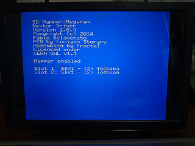
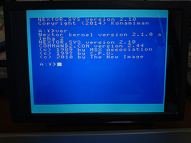

SD MapperMegaram512KB (BEEP-shop販売版) の追懐方に関する備忘録
■MSX-DOS2互換 NEXTOR-DOS (続き)
MSX-DOS2では、MSXDOS2.SYS と COMMAND2.COM の２つのファイルをディスクに入れておく必要がありました。
NEXTORでは、これに相当するファイルとして NEXTOR.SYS, COMMAND2.COM が必要になります。
上記 Konamimanさんのページの下の方に NEXTOR.SYS (Full Version) や、COMMAND2.COM のダウンロードリンクがありますので、
ここからダウンロードして、フォーマット済みのSDカードへ書き込みます。
tools.zip に全部入ってます。
NEXTOR.SYS (Full Version) をダウンロードすると、"NEXTOR.SYS.japanese" のようなファイル名になっています。
これを "NEXTOR.SYS" と変更してから SDカードへコピーしてください。
COMMAND2.COM は、MSX上で INSTALL.BAT を実行して生成するようになってます。
そのために MSX-DOS が必要になります (^^;
変換済みのものをここに置いておきます。
COMMAND2.COM の 2.20 や 2.31 ではフリーズしてしまうようです。2.44 を使います。
NEXTOR.SYS と COMMAND2.COM を書き込んだ SDカードを SD Mapper Megaram の SD1 に装着し、
MSXのスロットへ挿入。MSXの電源を入れます。
 
写真の Slot 1, Slot 2 というのは、カートリッジ上の SD1, SD2 のことです。
SDカードが挿入されていない場合は Empty と表示されます。
コマンド類は MSX-DOS2 と同じなので、説明は省略します。
MegaSCSI 等で使う EP.COM 等はうまく動かなかったりするようです。
代わりに 下記にある SofaRun の中にある SRI.COM 等が使えるようです。(未確認)
[外部へリンク] Louthrax's MSX game room
■資料
このカートリッジに使われている CPLD の回路デザインデータや、ROMに書き込まれているドライバファームウェアのソースファイルは
下記にまとめられているようです。
[外部へリンク] GitHub msxsdmapper
[前へ][次へ]